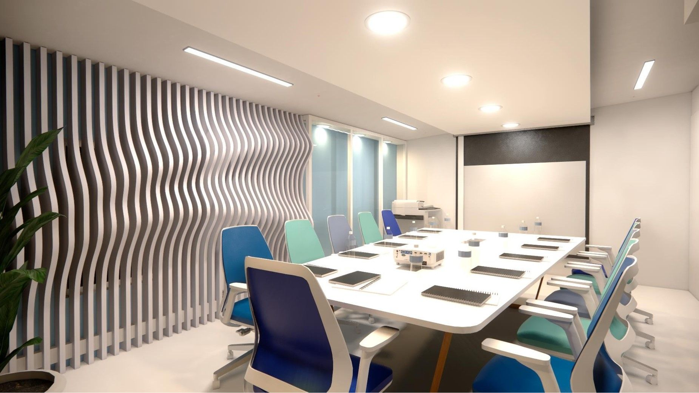
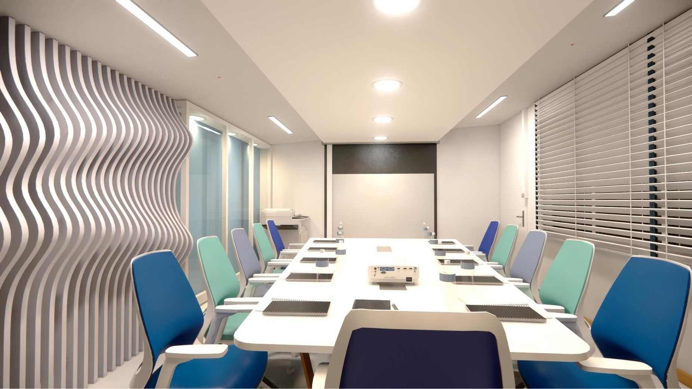
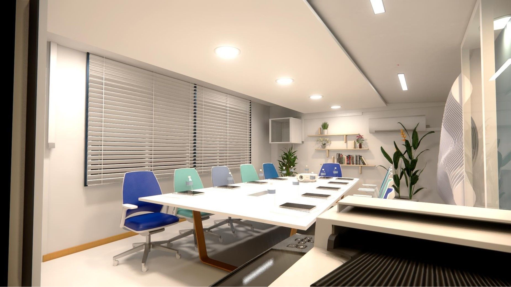
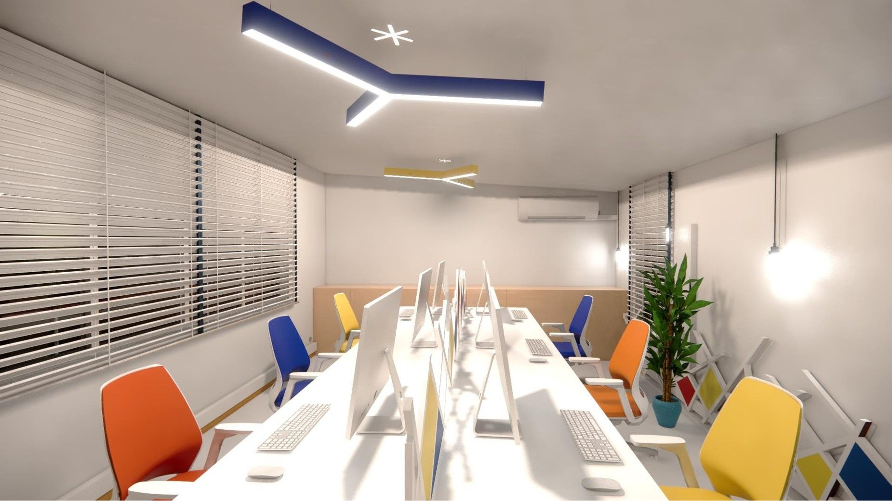
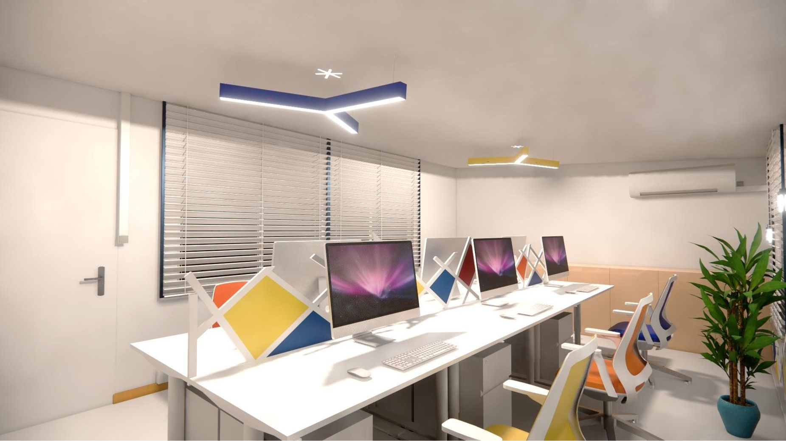
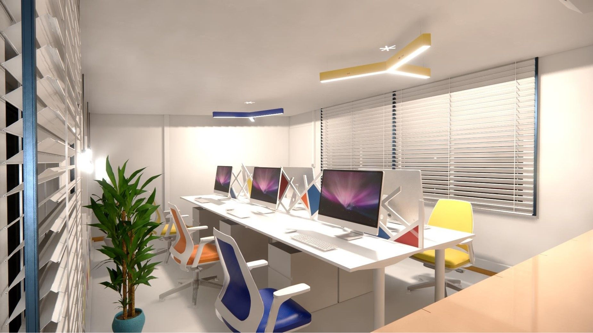
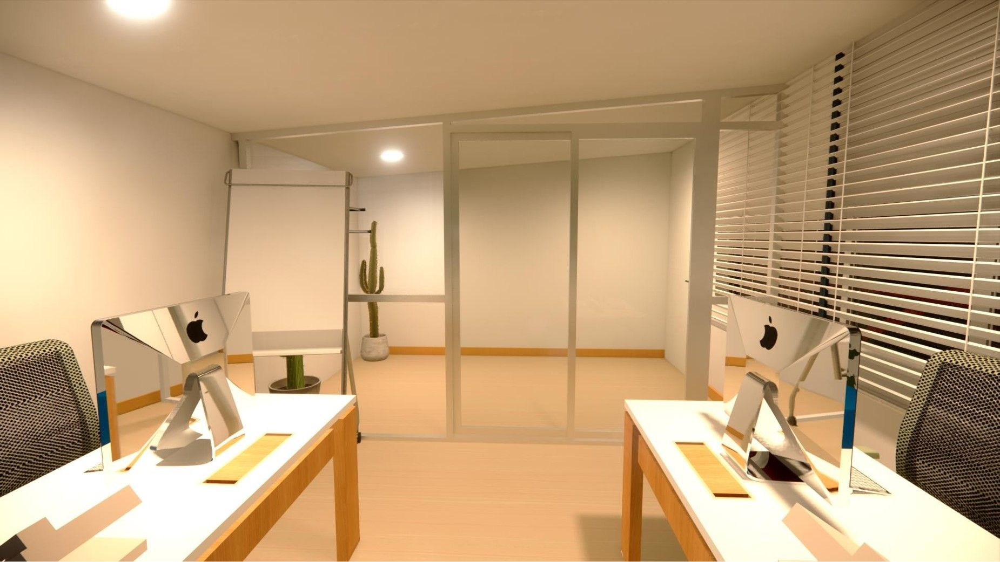

Aménagement des Bureaux de la Base Petrofor - Port de Douala
Ce projet concerne l'aménagement intérieur et la rénovation des bureaux d'une base opérationnelle pour Perenco-Petrofor, située au sein du Port Autonome de Douala. Sur une surface de 183 m², l'objectif était d'optimiser l'espace pour répondre aux besoins techniques et administratifs complexes liés aux activités portuaires et industrielles.
Le programme architectural intègre une salle de réunion de 11 places avec équipements de projection, trois espaces de travail collaboratifs (workspaces) accueillant chacun 6 personnes, ainsi qu'une cafétéria conviviale de 20 places avec kitchenette et salon. Le projet inclut également des zones techniques spécialisées : un atelier électrique et un laboratoire avec vestiaire. La conception met l'accent sur la fonctionnalité, le choix de matériaux durables et une ambiance de travail stimulante pour les équipes de terrain.






